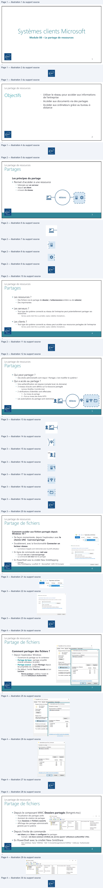
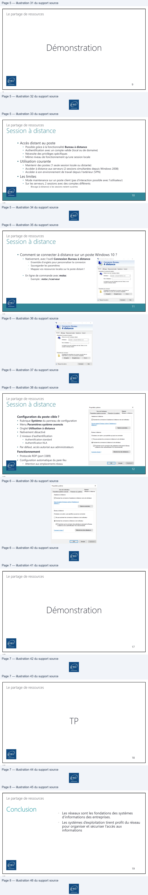
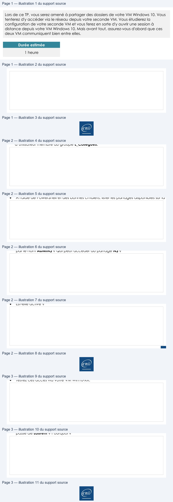
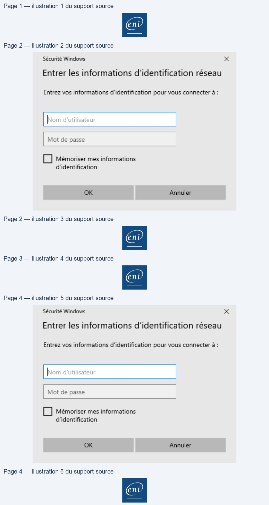
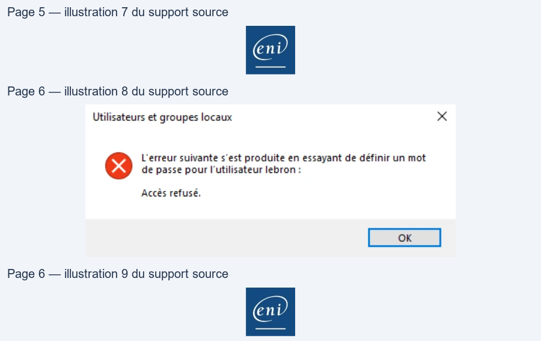

Module 08 — Le partage de ressources¶
La transcription du support Drive et l’aide pédagogique sont séparées pour rendre leur provenance explicite.
SOURCE DRIVE · TRANSCRIPTION DU SUPPORT
Le contenu des documents du dossier TSSR est transcrit ci-dessous, page par page. Les textes, tableaux et illustrations sont intégrés à la page Web ; aucun PDF ENI n’est diffusé par ce lecteur. Les versions et les consignes restent celles des supports de formation. Les compléments IA sont conservés dans leur onglet distinct.
Support · Module 08 - Support de cours · 8 pages transcrites
Page 1
Systèmes clients Microsoft
Module 08 – Le partage de ressources
1
1
Le partage de ressources
Objectifs
• Utiliser le réseau pour accéder aux informations
de l’entreprise
• Accéder aux documents via des partages
• Accéder aux ordinateurs grâce au bureau à
distance
2
2
Page 2
Le partage de ressources
Partages
Les principes du partage
• Permet d'accéder à une ressource
• hébergée par un serveur
• depuis un client
• à travers le réseau
RÉSEAU
3
3
Le partage de ressources
Partages
• Les ressources ?
• Des fichiers (via le partage de dossier, d'arborescence entière ou de volume)
• Des imprimantes
• Les serveurs ?
• Tout type de système connecté au réseau de l'entreprise peut potentiellement partager ses
ressources
•
Serveur, poste client fixe ou portable, copieur, tablette, Smartphone…
• Les clients ?
• Tout type de système connecté au réseau peut accéder aux ressources partagées de l'entreprise
•
Serveur, poste client fixe ou portable, copieur, tablette, Smartphone…
4
4
Texte relevé dans les illustrations
e( }
an
Page 3
Le partage de ressources
Partages
• Qui peut partager ?
• Des droits administratifs sont requis ! Partager, c'est modifier le système !
• Qui a accès au partage ?
• Une authentification est requise (compte local, du domaine)
• 3 niveaux d'accès sont définis sur la ressource partagée
• Lecture, Modifier, Contrôle total
• 2 vérifications d'identités sont effectuées
• 1 – Au niveau du partage
• 2 – Puis au niveau des droits NTFS
• Les autorisations du partage sont restrictives
RÉSEAU
5
5
Le partage de ressources
Partage de fichiers
Comment accéder aux fichiers partagés depuis
Windows 10 ?
• De façon momentanée, depuis l'explorateur avec le
chemin UNC \\serveur\partage
• Durablement, avec la fonctionnalité Connecter un
lecteur réseau
•
Les lecteurs mappés sont mémorisés avec le profil utilisateur
• En ligne de commande avec net use
•
Exemple net use z: \\serveur\partage
•
La commande net view liste les partages
• En PowerShell avec la cmdlet New-SmbMapping
•
Exemple
New-SmbMapping -LocalPath 'R:' -RemotePath '\\SRV-FIC\Compta'
6
6
Texte relevé dans les illustrations
[4
\
sy!
ty
=n
|
2
ayo
\
/
LL
End
n
+
| Explorateur
de fichiers
AREA
serveur partage|
—
Soo
—
=
_
—
——
RE
End
Page 4
Le partage de ressources
Partage de fichiers
Comment partager des fichiers ?
• Depuis l'explorateur Windows
• Ouverture du partage sur le conteneur
• Partage de base : partage simplifié
orienté utilisateur (à éviter)
• Partage avancé : onglet Partage depuis
les propriétés du conteneur
• Par défaut, l'entité Tout le monde est en
Lecture
• Bonne pratique : préférez l'entité de
sécurité Utilisateurs Authentifiés
7
7
Le partage de ressources
Partage de fichiers
• Depuis le composant MMC Dossiers partagés (fsmgmt.msc)
• Visualisation des partages actifs
• Assistant de création de partages
• Vues Sessions et Fichiers ouverts
• Affichage des partages administratifs
générés par le système
• Depuis l'invite de commande
• net share pour lister et configurer les partages
• Exemple : net share commun=d:\Note_de_service /grant:"utilisateurs authentifiés",FULL
• En PowerShell avec la cmdlet New-SmbShare
•
New-SmbShare -Name "VMSFiles" -Path "C:\ClusterStorage\Volume1\VMFiles" -FullAccess "Authenticated
Users"
8
8
Texte relevé dans les illustrations
Propriétés de
: Doc_Communs
x
Général
Partage
Sécurité
Versions précédentes
Personnaliser
Pattage defichiers et de dossiers Î M Autorisations pour Doc Communs
x
Doc_Communs
‘Atorisations du partage
Non partagé
a
éseau
Noms de groupesou d'utilisateurs
Non partagé
SA Utlisateurs authenttiés
Pastager
Partage avancé
Définir des autorisations personne
d'autres options de partage
Aouter.
Supprimer
Don |seen
=
Partage
avancé.
fee
Autoriser
R
Protection par mot de passe
Contréle total
a
Qo
Les utiisateurs doivent posséder
Modiier
E7
D
cet ordinateur pour accéderaux à | Lecture
E
Oo
Pour modtier ce paramètre,
sel
Informations surle cortrôle d'accès et les autorsations
=
[Arner
_] | Aopiœuer
ent
® Dossiers partagés
-
ag
x
Fichier
Action
Affichage?
CET
MENEola
A Dossiers partagés local| Nom du partage Chemin
du dossier
Type
Nb deconnesons
cient |Description
a
Pattages
IADMINS
CiWindons
Windows
0
Administration
à distance
@
Sessions
Bacs
a
Windows
0
Partage par défaut
1B
Fichiers ouverts
sans
DA
Windows
0
Partage
par défaut
[Bl DocCommuns
Dee Commune
Windows
0
ges
BN
Windows
0
Partage par défaut
sics
Windows
0
IPC distant
ent

Page 5
Le partage de ressources
Démonstration
9
9
Le partage de ressources
Session à distance
• Accès distant au poste
• Possible grâce à la fonctionnalité Bureau à distance
• Authentification avec un compte valide (local ou de domaine)
• Nécessite des privilèges spécifiques
• Même niveau de fonctionnement qu'une session locale
• Utilisation courante
• Maintenir des postes (1 seule session locale ou distante)
• Accéder à distance aux serveurs (2 sessions simultanées depuis Windows 2008)
• Accéder à son environnement de travail depuis l'extérieur (VPN)
• Les limites
• Mode maintenance sur un poste client (pas d'interaction possible avec l'utilisateur)
• Sur les serveurs, 2 sessions avec des comptes différents
•
Blocage (à distance) si les sessions restent ouvertes
10
10
Page 6
Le partage de ressources
Session à distance
• Comment se connecter à distance sur un poste Windows 10 ?
• Nativement, avec l'outil Connexion Bureau à distance
• Ensemble d'onglets pour personnaliser la connexion
• Sauvegarder les paramètres
• Mappez vos ressources locales sur le poste distant !
• En ligne de commande avec mstsc
• Exemple : mstsc /v:serveur
11
11
Le partage de ressources
Session à distance
Configuration du poste cible ?
• Rubrique Système du panneau de configuration
• Menu Paramètres système avancés
• Onglet Utilisation à distance
• Nativement désactivé
• 2 niveaux d'authentification
• Authentification standard
• Authentification NLA
• Par défaut, accès autorisé aux administrateurs
Fonctionnement
• Protocole RDP (port 3389)
• Configuration automatique du pare-feu
• Attention aux emplacements réseau
12
12
Texte relevé dans les illustrations
M Conoion Bureau à
sta
L Connexion Bureau
>) A distance
Général Mtchage Ressouces locales Exéience | Avancé
Parambres d'ouveture de session
By rs renélec
itt
Orinatew:
[Ecroecompusaiemem
©
Non distur
Le chan du nom deodnateuret
vide. Entrez
un nom
comple oct dare
Paramères de comen
Eregatez lea paramètres de conexon actus ana un
h
ere
Envegiter | |Evegéter sous
Our
=
Cu
crea]
[ae]
env
Propriétés système
x
Nom de l'oinateur
Matériel
Paramètres système avancés
Protection du systéme
Ltsation à distance
Assistance à distance
Fi Atorser les connexions d assistance à distance vers cet ordinateur
Que se passe lorsque
active Assistance à
distance ?
Options avancées.
Bureau à dstance
Choisissez une option, puis spécfiez qu peut se connecter
ONe pas autoriser les connexionsà dstance à cet ocinateur
© Atorserles connexions à distance à cet ordinateur
EZN'autoñser que la connesion des ornateurs exécutant le Bureau
à distance avec authentfication NLA fecommandé)
Comment chose?
Sélectionnez des utiisteurs.
2)
[oT] amis
| ins
env
Page 7
Le partage de ressources
Démonstration
17
17
Le partage de ressources
TP
18
18
Page 8
Le partage de ressources
Conclusion
• Les réseaux sont les fondations des systèmes
d’informations des entreprises.
• Les systèmes d’exploitation tirent profit du réseau
pour organiser et sécuriser l’accès aux
informations
19
19
| • | Les réseaux sont les fondations des systèmes d’informations des entreprises . |
| • | Les systèmes d’exploitation tirent profit du réseau pour organiser et sécuriser l’accès aux informations |
| 19 |

Référence du document : 1behcnzxdajFM0y3ydZ7w_ggzyePbJz24 · SHA-256 313d40d1e9005ae9…
Énoncé · Enonc‚ du TP - Partages et sessions distantes · 3 pages transcrites
Page 1
Systèmes Clients Microsoft
Partages et sessions
distantes
TP du Module 08 – Le partage de ressources
Lors de ce TP, vous serez amené à partager des dossiers de votre VM Windows 10. Vous
tenterez d'y accéder via le réseau depuis votre seconde VM. Vous étudierez la
configuration de votre seconde VM et vous ferez en sorte d'y ouvrir une session à
distance depuis votre VM Windows 10. Mais avant tout, assurez-vous d'abord que ces
deux VM communiquent bien entre elles.
Durée estimée
1 heure
Énoncé
Lisez l'ensemble de ce TP avant de vous lancer dans la pratique
Sur votre VM Win10-XX, partagez les ressources suivantes :
Partagez le dossier Echange disponible sur le lecteur D:
Vous utilisez les bonnes pratiques Microsoft
Le partage se nommera CoWorkerShare
Permettez à vos collègues la possibilité de modifier le contenu du dossier depuis leurs
VM
Vous testerez le bon fonctionnement
Pour faciliter l'usage des logiciels de l'entreprise, l'équipe informatique décide de
partager le dossier "manuels d'utilisation". Les utilisateurs auront la possibilité d'y
déposer des documents texte et des images (comme des captures d'écran) dans le
Page 1/3
© ENI – Tous droits réservés
Page 2
Systèmes Clients Microsoft
but d'enrichir une future FAQ.
Vous êtes en charge de créer le partage. Vous testerez les accès avec un compte
d’utilisateur membre du groupe L_Collegues.
Sur Discovery
À l'aide de PowerShell et des bonnes cmdlets, lister les partages disponibles sur la VM.
Toujours à l'aide de PowerShell, quel dossier de l'arborescence du système est partagé
par le nom ADMIN$ ? Qui peut accéder au partage N$ ?
Bureau à distance
Vérifiez l'état d'activation de la fonctionnalité Bureau à distance disponible sur votre
VM Discovery
Est-elle active ?
Page 2/3
© ENI – Tous droits réservés
Page 3
Systèmes Clients Microsoft
Faites en sorte de permettre aux utilisateurs Géraldine et Laurent d'ouvrir une session
Bureau à distance sur la VM Discovery.
Testez ces accès via votre VM Win10-XX.
Une fois connectée, Géraldine peut-elle changer le mot de passe de Laurent ? Adm
peut-il ouvrir une session bureau à distance sur Discovery ? Peut-il changer le mot de
passe de Laurent ? Pourquoi ?
Solution
Une solution est proposée pour ce TP sous la forme d'un PDF commenté, disponible dans
les ressources à télécharger.
Page 3/3
© ENI – Tous droits réservés

Référence du document : 12wyExQ4Og5nnWqDusZdLTuJDfy8teXqo · SHA-256 4865d38629b1cc40…
Correction · Solution du TP - Partages et sessions distantes · 6 pages transcrites
Correction originale : à consulter après avoir tenté l’exercice.
Page 1
Systèmes Clients Microsoft
Partages et sessions
distantes
TP du Module 08 – Le partage de ressources
Proposition de solution
Sur votre VM Win10-XX, partagez les ressources suivantes :
•
Partagez le dossier Echange disponible sur le lecteur D:
•
Vous utilisez les bonnes pratiques Microsoft
•
Le partage se nommera CoWorkerShare
•
Permettez à vos collègues la possibilité de modifier le contenu du dossier depuis leurs
VM
•
Vous testerez le bon fonctionnement
Clic droit sur le dossier Echange disponible sur le lecteur D:
Propriétés
Onglet Partage
Partage avancé
Cochez Partager ce dossier
Nom du partage : CoWorkerShare
Mises en place des bonnes pratiques Microsoft
Autorisations
Supprimer Tout le monde
Ajouter Utilisateurs authentifiés en Contrôle total
Appliquer > OK
Appliquer > OK
Le dossier est maintenant partagé, accessible via le réseau.
Pour permettre à nos collègues d'accéder au contenu du dossier via le partage, il faut
consulter/modifier les autorisations d'accès NTFS
Onglet Sécurité du dossier Echange
Page 1/6
© ENI – Tous droits réservés
Page 2
Systèmes Clients Microsoft
S'assurer que le groupe L_Collegues possède les autorisations d'accès en Modification
Dans le cas contraire, ajouter le groupe L_Collegues dans la DACL et attribuer les
autorisations d'accès en Modification
Pour tester le bon fonctionnement
Ouvrez une session sur la VM Discovery
Ouvrez l'explorateur Windows
Dans la barre de navigation, entrez le chemin UNC correspondant à votre partage
\\@ipWin10-XX\CoWorkerShare
Après quelques secondes, vous êtes challengé.
Seuls les utilisateurs authentifiés connus de la base SAM de Win10-XX peuvent accéder au
contenu du partage
Entrer le nom d'utilisateur d'un de vos utilisateurs membre du groupe L_Collegues ainsi que
son mot de passe pour avoir accès au contenu du dossier partagé CoWorkerShare en
Modification.
Créer un dossier TestPartage pour vérifier le niveau d'accès en Modification.
Fermer la session actuellement ouverte sur Discovery pour regénérer le jeton d'accès.
•
Pour faciliter l'usage des logiciels de l'entreprise, l'équipe informatique décide de
partager le dossier "manuels d'utilisation". Les utilisateurs auront la possibilité d'y déposer
des documents texte et des images (comme des captures d'écran) dans le but
Page 2/6
© ENI – Tous droits réservés
Texte relevé dans les illustrations
Sécurité Windows
x
Entrer les informations d'identification réseau
Entrez vos informations d'identification pour vous connecter a:
C] Mémoriser mes informations
d'identification
OK
Annuler
Page 3
Systèmes Clients Microsoft
d'enrichir une future FAQ.
Vous êtes en charge de créer le partage. Vous testerez les accès avec un compte
d’utilisateur membre du groupe L_Collegues
Les utilisateurs auront la possibilité d'y déposer des documents texte et des images (comme
des captures d'écran) dans le but d'enrichir une future FAQ
Les utilisateurs doivent donc avoir un accès en Modification sur le dossier manuels
d'utilisation
Clic droit sur le dossier Manuels d'utilisation disponible sur le volume TOOLS
Propriétés
Onglet Sécurité
Modifier
Sélectionner Utilisateurs
Cochez Modification
Appliquer > OK
Ouverture du partage en respectant les bonnes pratiques Microsoft
Onglet Partage
Partage avancé
Cochez Partager ce dossier
Nom du partage : manuels d'utilisation
Autorisations
Supprimer Tout le monde
Ajouter Utilisateurs authentifiés en Contrôle total
Appliquer > OK
Fermer
Le dossier est maintenant partagé, accessible via le réseau.
Pour tester le bon fonctionnement
Ouvrez une session sur la VM Discovery
Ouvrez l'explorateur Windows
Page 3/6
© ENI – Tous droits réservés
Page 4
Systèmes Clients Microsoft
Dans la barre de navigation, entrez le chemin UNC correspondant à votre partage
\\@ipWin10-XX\Manuels d'utilisation
Après quelques secondes, vous êtes challengé.
Seuls les utilisateurs authentifiés connus de la base SAM de Win10-XX peuvent accéder au
contenu du partage
Entrer le nom d'utilisateur d'un de vos utilisateurs membre du groupe L_Collegues ainsi que
son mot de passe pour avoir accès au contenu du dossier partagé manuels d'utilisation en
Modification.
Créer un dossier TestManuelsUtil pour vérifier le niveau d'accès en Modification.
Fermer la session actuellement ouverte sur Discovery pour regénérer le jeton d'accès.
Sur Discovery
•
À l'aide de PowerShell et des bonnes cmdlets, lister les partages disponibles sur la VM.
Get-SMBShare
Ou
Get-FileShare mais peut-être un peu moins parlant comme cmdlet.
•
Toujours à l'aide de PowerShell, quel dossier de l'arborescence du système est partagé
par le nom ADMIN$ ? Qui peut accéder au partage N$ ?
Get-SMBShare ADMIN$
Page 4/6
© ENI – Tous droits réservés
Texte relevé dans les illustrations
Sécurité Windows
x
Entrer les informations d'identification réseau
Entrez vos informations d'identification pour vous connecter a:
C] Mémoriser mes informations
d'identification
OK
Annuler

Page 5
Systèmes Clients Microsoft
Le partage ADMIN$ permet d'accéder au contenu du dossier C:\Windows de Discovery
(valeur de la propriété Path). C'est un partage administratif natif
Get-SMBShareAccess N$
Les membres du groupe Administrateurs, Opérateurs de sauvegarde et l'entité de sécurité
INTERACTIF ont un accès en Contrôle total
Bureau à distance
•
Vérifiez l'état d'activation de la fonctionnalité Bureau à distance disponible sur votre VM
Discovery
•
Est-elle active ?
Rechercher > sysdm.cpl
Onglet Utilisation à distance
Par défaut, la fonctionnalité Bureau à distance n'est pas active.
•
Faites en sorte de permettre aux utilisateurs Géraldine et Laurent d'ouvrir une session
Bureau à distance sur la VM Discovery
•
Testez ces accès via votre VM Win10-XX
Sélectionner des utilisateurs…
Ajouter…
Giannis;Lebron
OK
Cocher Autoriser les connexions à distance à cet ordinateur
Appliquer > OK
Sur Win10-XX
Rechercher > Connexion Bureau à distance
Ordinateur : @ip de Discovery
Lorsque vous êtes challengé, indiquer les login/mot de passe de Géraldine
Login : giannis
Mot de passe : Pa$$w0rd
OK
Lors de la première connexion, un échange de certificat est effectué.
Cliquez sur Oui
Page 5/6
© ENI – Tous droits réservés
Page 6
Systèmes Clients Microsoft
Le bureau à distance s'ouvre, vous avez accès à la VM Discovery.
Pour accéder au bureau, fermez éventuellement la session en cours sur Discovery.
•
Une fois connectée, Géraldine peut-elle changer le mot de passe de Laurent ? Adm
peut-il ouvrir une session bureau à distance sur Discovery ? Peut-il changer le mot de
passe de Laurent ? Pourquoi ?
Rechercher > lusrmgr.msc
Nœud Utilisateurs
Clic droit sur Lebron
Définir le mot de passe…
Continuer
Insérer puis confirmer un nouveau mot de passe pour Laurent EBRON
OK
Géraldine ne peut pas changer le mot de passe de Laurent car seuls les membres du
groupe Administrateurs peuvent faire cette action.
Fermer la session de Géraldine et ouvrir une nouvelle session à distance avec le compte
adm.
adm peut ouvrir une session à distance car par défaut, tout utilisateur membre du groupe
prédéfini Administrateurs peut ouvrir une session à distance.
Tenter de changer le mot de passe de Laurent
C'est possible car l'utilisateur adm fait partie du groupe prédéfini Administrateurs
Fermez la session à distance (clic droit sur le menu Démarrer > Arrêter ou se déconnecter >
Se déconnecter)
Page 6/6
© ENI – Tous droits réservés
Texte relevé dans les illustrations
Utilisateurs et groupes locaux
x
L'erreur suivante s'est produite en essayant de définir un mot
de passe pour l'utilisateur lebron:
Acces refusé,

Référence du document : 1yrnBvdMj6n0hs55r8oUkc1Y_R0j7mS6U · SHA-256 dd6b14bf0535849c…
Complément IA / externe au cours — fiche pédagogique du portail
Cette fiche contient une reformulation et des aides d’apprentissage rédigées par IA. Elle est distincte de la transcription des documents du Drive et ne la remplace pas. Les schémas de synthèse de cette fiche sont des illustrations IA / externes au cours, sauf les captures explicitement attribuées à un document source.
Séquence : Systèmes clients Microsoft
Sources TSSR : support du module, énoncé et correction du TP « Partages et sessions distantes ».
Objectifs¶
À l’issue du module, vous devez pouvoir accéder à une ressource de l’entreprise via un partage réseau, créer et contrôler un partage de dossiers, distinguer les autorisations de partage des droits NTFS et préparer une session Bureau à distance dans le périmètre du laboratoire.
Partager une ressource sur le réseau¶
Un partage rend une ressource hébergée par un système accessible depuis un client par le réseau. Le support cite les dossiers, les arborescences, les volumes et les imprimantes. Un serveur, un poste client, un copieur, une tablette ou un smartphone connecté au réseau de l’entreprise peut être concerné selon le scénario.
Créer un partage modifie le système : des droits administratifs sont requis. L’accès demande une authentification avec un compte local ou de domaine.
Autorisations : deux contrôles successifs¶
Le support distingue deux vérifications : les autorisations du partage puis les droits NTFS de la ressource. Les niveaux présentés pour un partage sont Lecture, Modifier et Contrôle total. Les autorisations de partage sont restrictives : testez donc avec le compte réellement visé.
Dans le TP, la correction utilise Utilisateurs authentifiés pour le partage et vérifie séparément que L_Collegues dispose de la modification au niveau NTFS. C’est une configuration de laboratoire, non une valeur à reprendre sans contrôle de la cible.
Accéder à un partage¶
| Besoin | Moyen présenté dans le support |
|---|---|
| Accès ponctuel | Chemin UNC, par exemple \\serveur\partage, depuis l’Explorateur |
| Accès durable | Connecter un lecteur réseau ; le lecteur est mémorisé dans le profil utilisateur |
| Invite de commandes | net use pour connecter un lecteur ; net view pour lister les partages |
| PowerShell | New-SmbMapping pour créer un mappage |
Les chemins, noms et lettres du TP appartiennent au laboratoire.
Créer et observer un partage¶
Le support présente l’Explorateur Windows, le partage avancé, Dossiers partagés (fsmgmt.msc), net share et New-SmbShare. fsmgmt.msc permet notamment de voir les partages actifs, les sessions, les fichiers ouverts et les partages administratifs générés par le système.
Le partage simplifié est décrit comme orienté utilisateur et à éviter. Pour l’exemple étudié, le support recommande de préférer Utilisateurs authentifiés à Tout le monde.
Le TP observe aussi les partages de Discovery avec Get-SmbShare, Get-SmbShare ADMIN$ et Get-SmbShareAccess N$. ADMIN$ et N$ sont des observations du scénario : vérifiez leur chemin et leurs accès sur la machine réellement observée.
Sessions à distance¶
Le Bureau à distance donne accès à un poste avec un compte local ou de domaine valide et des privilèges adaptés. Le support présente Connexion Bureau à distance, mstsc, l’authentification standard et NLA. RDP utilise le port 3389 dans le support ; l’emplacement réseau doit être pris en compte.
Le TP demande de vérifier la fonctionnalité sur Discovery, d’autoriser les utilisateurs du scénario, puis de tester depuis Win10-XX. Les comptes, adresses et résultats sont propres au laboratoire. Lorsqu’une authentification est nécessaire, utilisez les identifiants fournis par le formateur ; ne les inscrivez pas dans un document de cours.
Méthode de vérification issue du TP¶
- Vérifier la communication entre les deux machines du scénario.
- Vérifier les autorisations de partage puis NTFS séparément.
- Tester l’accès avec le compte concerné et l’action attendue.
- Fermer puis rouvrir la session lorsque le scénario demande de régénérer le jeton d’accès.
- Vérifier la configuration du Bureau à distance, les utilisateurs autorisés et l’ouverture effective de la session.
Synthèse¶
Un partage relie une ressource, une authentification et deux niveaux de contrôle d’accès. Les outils d’administration permettent de créer, lister et observer les partages ; le TP relie ces contrôles à un accès effectif et à une session distante.
Pour pratiquer et réviser¶
- Présentation du TP
- Énoncé du TP
- Correction du TP
- Fiche de révision
- Kahoot du module
- Présentation de la formation
Provenance¶
- A — sources originales : support M08, énoncé et correction TSSR consultés en lecture seule dans Drive.
- B — structuration pédagogique : organisation, tableau et formulation explicative de cette page.
M08 — Le partage de ressources
10 questions
Teste tes connaissances sur ce module.